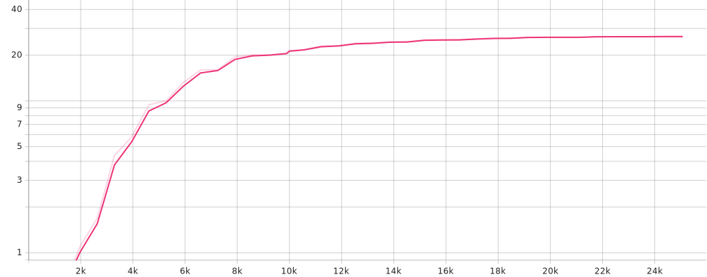

- Objectif : Rassembler un ensemble de données textuelles dans deux langues ou plus qui sont des traductions directes les unes des autres.
- Actions : Identifier et collecter des sources fiables de corpus parallèles adaptées au domaine d'application visé.
- Objectif : Assurer que le corpus recueilli est de haute qualité et suffisamment vaste pour l'entraînement du modèle.
- Actions : Analyser le corpus pour vérifier sa pertinence, sa diversité et son ampleur. Éliminer les données bruitées ou non pertinentes.
- Objectif : Nettoyer et préparer les données pour l'entraînement du modèle.
- Actions : Mise en œuvre de techniques de prétraitement telles que la tokenisation, la suppression des stop-words, et la normalisation.
- Objectif : Choisir une architecture de modèle d'apprentissage profond adaptée à la tâche de traduction.
- Actions : Évaluer différentes architectures et sélectionner la plus appropriée.
- Objectif : Entraîner le modèle sur le corpus prétraité pour apprendre à traduire d'une langue à une autre.
- Actions : Configurer les paramètres d'entraînement, entraîner le modèle et ajuster les hyperparamètres pour optimiser les performances.
- Objectif : Créer une interface utilisateur pour interagir avec le modèle de traduction.
- Actions : Développer une interface web en HTML/CSS (et potentiellement JavaScript) pour soumettre des textes à traduire et afficher les résultats.
- Objectif : Permettre la comparaison entre le modèle entraîné et d'autres services de traduction.
- Actions : Intégrer les APIs de services de traduction externes (Deepl, ChatGPT3.5, ChatGPT-4) dans l'interface web.
- Objectif : Améliorer l'esthétique et l'ergonomie de l'interface web.
- Actions : Utiliser des frameworks CSS pour styliser l'interface.
- Objectif : Mesurer et comparer la qualité des traductions produites par les différents modèles.
- Actions : Utiliser des métriques d'évaluation comme BLEU pour quantifier la performance des traductions par rapport à des traductions de référence.
Le traducteur automatique est un outil qui permet de traduire du texte d'une langue à une autre. Il existe plusieurs technologies pour réaliser cette tâche, et plusieurs défis à relever pour obtenir des traductions de qualité.
Lien GitHubDans notre projet, nous avons opté pour l'utilisation d'un modèle Transformer de Fairseq, une bibliothèque construite sur PyTorch et spécialisée dans le traitement automatique du langage naturel. Ce choix nous a permis de bénéficier d'une architecture avancée, notamment grâce à l'attention multi-têtes du Transformer, pour traiter efficacement les dépendances textuelles longues et améliorer notre compréhension et génération de langage.
Nous avons personnalisé le modèle en le raffinant sur un ensemble de données spécifique, ajustant ainsi les poids pré-entraînés pour qu'ils correspondent mieux à nos objectifs. Ce processus d'affinage a significativement augmenté la performance du modèle sur nos tâches, en adaptant ses capacités à notre contexte particulier et en assurant une haute précision dans les résultats obtenus.
PyTorch est une bibliothèque de machine learning open source développée par Facebook AI Research (FAIR). Elle est conçue pour faciliter la création et l'entraînement de réseaux de neurones profonds. PyTorch se distingue par sa facilité d'utilisation, sa flexibilité et son approche dynamique de la construction de graphes, ce qui signifie que le graphe de calcul peut être modifié à la volée lors de l'exécution. Cela le rend particulièrement adapté à la recherche et au développement de modèles expérimentaux, où la flexibilité et l'itération rapide sont clés.
Nous avons choisi d'adopter PyTorch comme base architecturale pour notre réseau de neurones, profitant de sa flexibilité, de sa facilité d'utilisation, et de sa capacité à manipuler des graphes de calcul dynamiques. Cette décision nous a permis de développer et d'itérer sur notre modèle de manière plus intuitive et efficace, tirant parti de l'approche de PyTorch qui facilite l'expérimentation et le débogage en temps réel. En outre, l'accès à une vaste bibliothèque de modules préconstruits et l'optimisation intégrée pour le calcul GPU ont significativement accéléré le temps d'entraînement de notre réseau, nous permettant de concentrer nos efforts sur l'innovation et l'amélioration de la performance du modèle.
Facile à utiliser pour le développement d'API RESTful en Python, FastAPI nous met à disposition une solution puissante pour interagir avec notre interface web, notamment lors de l'appel à notre modèle de traduction entraîné par Fairseq. Grâce à ses fonctionnalités avancées telles que la gestion efficace des requêtes HTTP, la prise en charge native de l'asynchronisme et la génération automatique de documentation interactive, FastAPI simplifie grandement le processus de communication entre notre interface utilisateur et le modèle de traduction. Cette intégration fluide permet une expérience utilisateur transparente tout en exploitant pleinement les performances et la flexibilité offertes par FastAPI et Fairseq.
Dans notre tâche d'entraînement d'un traducteur automatique, la fonction de perte (ou "loss") joue un rôle crucial en quantifiant l'écart entre les prédictions du modèle et les traductions correctes attendues. Cette fonction de perte est utilisée pour guider le processus d'optimisation du modèle en fournissant un feedback sur sa performance à chaque étape de l'entraînement.
Le processus d'entraînement vise à minimiser cette fonction de perte, ce qui signifie que le modèle est ajusté pour produire des traductions qui se rapprochent le plus possible des traductions de référence. La minimisation de la perte est réalisée à travers un processus itératif où le modèle fait des prédictions, calcule l'erreur de ces prédictions par rapport aux traductions attendues, et ajuste ses paramètres (par exemple, les poids des connexions neuronales) pour réduire cette erreur.
Durant la phase d'entraînement de notre système de traduction automatique, nous avons méticuleusement surveillé la fonction de perte (ou "loss") sur différents ensembles de données : entraînement, validation, et test. Cette fonction de perte nous a servi de baromètre pour évaluer l'efficacité de notre modèle à traduire correctement les textes. Lorsque nous observions une augmentation de la perte sur l'ensemble de validation, cela servait d'indicateur que notre modèle commençait à mémoriser spécifiquement les données d'entraînement au lieu de généraliser à partir de celles-ci, un phénomène connu sous le nom de sur-apprentissage. À ce stade critique, nous prenions la décision de cesser l'entraînement pour éviter que le modèle ne perde en capacité de généralisation sur de nouvelles données.
Pour une surveillance plus précise et intuitive de l'entraînement de notre modèle de traduction automatique, nous avons intégré TensorBoard dès le début du processus. Cet outil puissant de visualisation nous a permis de suivre en temps réel plusieurs métriques clés, dont la fonction de perte sur nos ensembles d'entraînement, de validation, et de test, ainsi que l'évolution du score BLEU. L'utilisation de TensorBoard a rendu l'identification des tendances de sur-apprentissage particulièrement efficace, en nous fournissant des graphiques détaillés qui illustrent l'évolution de la perte de validation. Ainsi, lorsque nous détectons une augmentation de cette perte, indiquant un début de sur-apprentissage, nous pouvons rapidement intervenir et ajuster notre stratégie d'entraînement pour optimiser les performances du modèle tout en préservant sa capacité à généraliser.
Lors de notre surveillance attentive de l'entraînement, l'utilisation des points de contrôle (checkpoints) s'est avérée cruciale. Nous avons constaté que le score BLEU, un indicateur clé de la qualité de la traduction, cessait de s'améliorer, se stabilisant entre 20 et 30, tandis que la fonction de perte sur l'ensemble de validation commençait à augmenter. Ce phénomène nous a signalé un début de sur-apprentissage, indiquant que le modèle perdait en capacité de généralisation. À ce moment précis, nous avons décidé d'interrompre l'entraînement pour préserver l'efficacité du modèle sur de nouvelles données. Le checkpoint le plus performant à ce stade, que nous avons nommé « checkpoint-best », a été sauvegardé comme notre modèle final. Cette stratégie nous a permis d'optimiser la balance entre apprentissage et généralisation, en nous assurant que le modèle retenu était celui offrant les meilleures performances sur des données inédites.
Visualisation de la fonction de perte sur l'ensemble du modèle dans TensorBoard
Visualisation du score BLEU sur l'ensemble de test dans TensorBoard